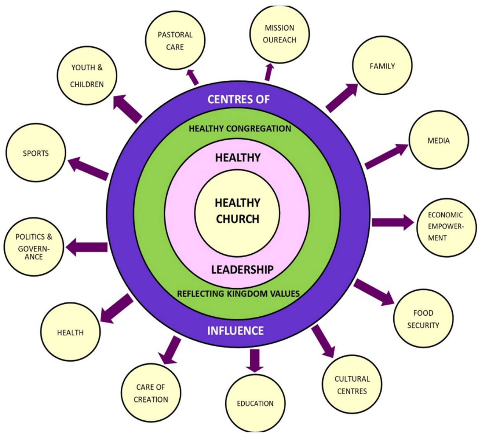
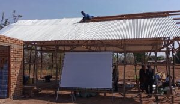

Church Planting
Planting vibrant Anglican churches across Africa to reach communities with the Gospel of Jesus Christ.

Expanding the Mission of the Church
Church planting is at the heart of the mission of Missions Anglicanes Afrique. Through partnerships with Anglican dioceses and local leaders, we help establish new congregations where communities can gather for worship, discipleship, and spiritual growth.
Our goal is to see healthy, self-sustaining churches planted in communities across Africa, reaching people with the transforming message of the Gospel.
Our Impact Across Africa
1000
Churches Planted
8
African Countries
Hundreds
Local Leaders Trained
Thousands
Lives Impacted
Church Planting Across Africa

Through the ministry of Missions Anglicanes Afrique, churches have been planted in several African nations, strengthening Anglican presence and spreading the Gospel.
- 🇰🇪 Kenya
- 🇷🇼 Rwanda
- 🇹🇿 Tanzania
- 🇲🇿 Mozambique
- 🇨🇩 DR Congo
- 🇲🇬 Madagascar
- 🇨🇲 Cameroon
- 🇿🇼 Zimbabwe
Church Planting Stories
Bishop Orina of ACK Diocese of Upper Southern Nyanza, Kenya on evagelism and outreach.
Suffragan Bishop John Orina of Kisii Area Bishopric narrates how Evangelism and Mission Outreach is growing the Anglican Church of Kenya in the region
Church Planting in Kericho Diocese
Watch as Rev. Peter Kirui, the Mission Director of Kericho diocese expounds on the usefulness of the Tent and Jesus Film in Church Planting
Church Planting ACK Niassa Diocese – Mozambique
This is a short testimonial video of Rev. Carlos Capito of Niassa diocese, Mozambique explaining the different processes they undertake to plant new churches.
Church Planting in Lodwar, Turkana – Kenya
The video entails the showcasing of the new churches planted in Turkana by evangelists and church leaders as a result of our Healthy Church Training Program.
Our Vision for Church Planting
We envision a vibrant network of Anglican churches across Africa that are biblically grounded, mission-minded, and actively engaged in transforming their communities through the Gospel.
By training leaders, supporting missionaries, and mobilizing resources, we are committed to seeing the Church grow and flourish in every region of Africa.

Sponsor a Church Plant
Across Africa, many communities are still waiting to hear the Gospel. Through church planting, new Anglican congregations are being established where believers can gather for worship, discipleship, and outreach.
Your support helps train leaders, provide ministry resources, and establish new churches in communities where Christ is not yet known.